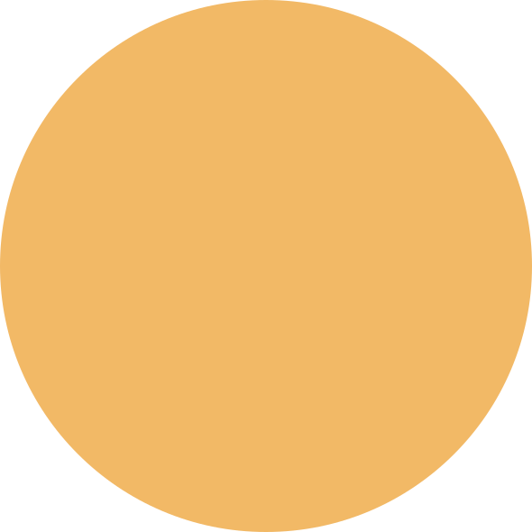
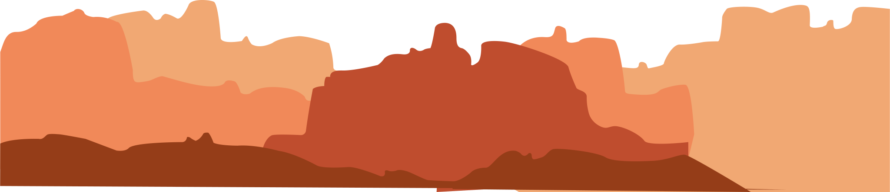
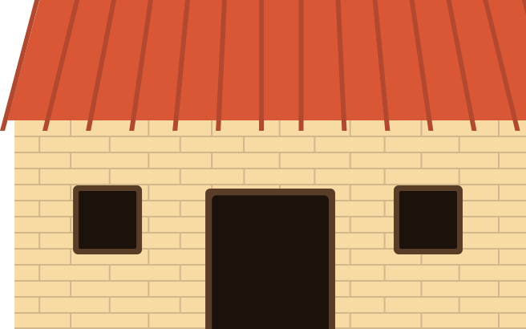
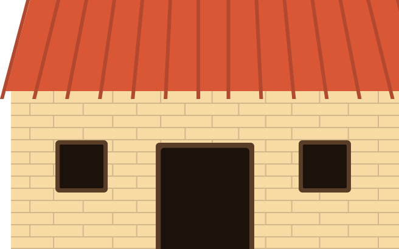

Click the moving objects to learn more about the holiday.
Click the facts to hide them.
Don't forget to explore the inside of the house!


Click the facts to hide them.
Don't forget to explore the inside of the house!


 

The Day of the Dead is a Mexican holiday celebrated throughout Mexico, in particular the Central and South regions, and by people of Mexican ancestry living in other places.
The multi-day holiday focuses on gatherings of family ad friends to pray for and remember those who have died, and help support their spiritual journey.
The holiday is called Day of the Dead in English speaking countries. In Mexico it is a public holiday and was celebrated at the beginning of summer prior to Spanish colonization.
The holiday's origins are traced back hundreds of years to an Aztec festival dedicated to the Goddess Mictecacihuatl. The holiday has spread around the world and now simply honours the dead.
The Day of the Dead celebration is similar to other societies' observances of a time to honour the dead. The tradition includes festivals and parades, as well as gatherings of families at cemeteries to pray for their deceased loved ones.
Celebrations developed over time from ancient traditions happening for around 2500 - 3000 years, and the modern Day of the Dead falls in the ninth month of the Aztec calendar. This is around the beginning of August and is celebrated for an entire month.